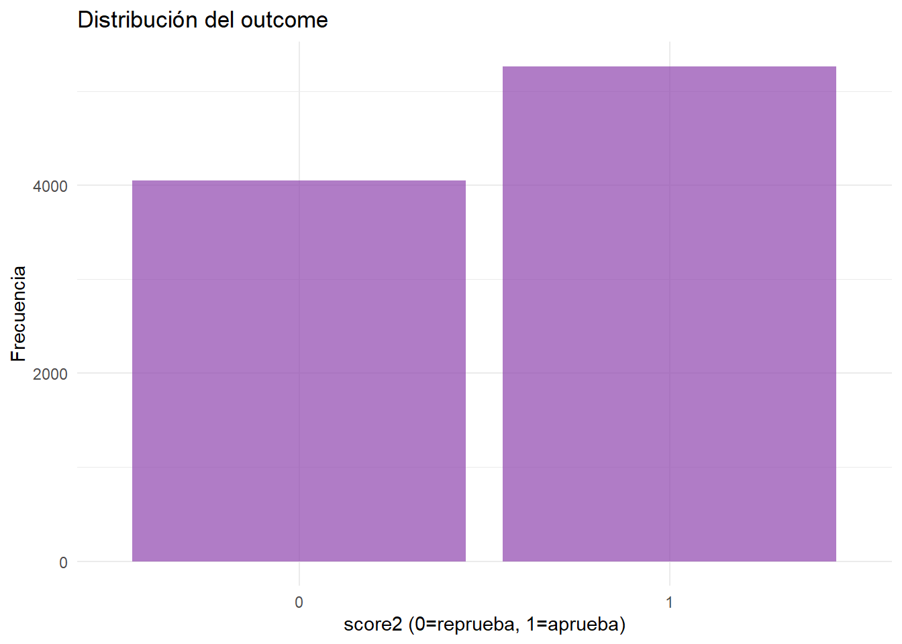
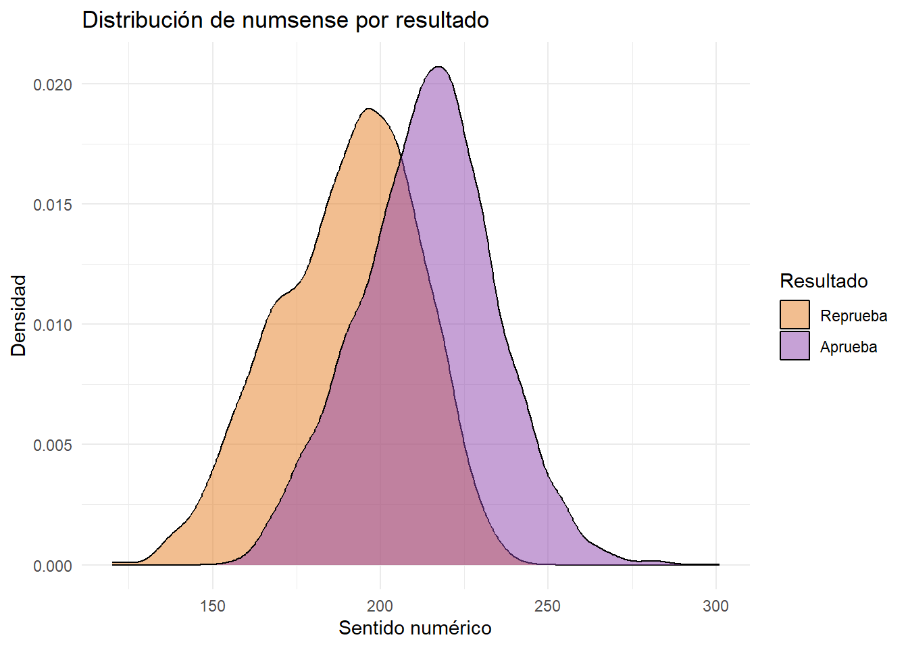
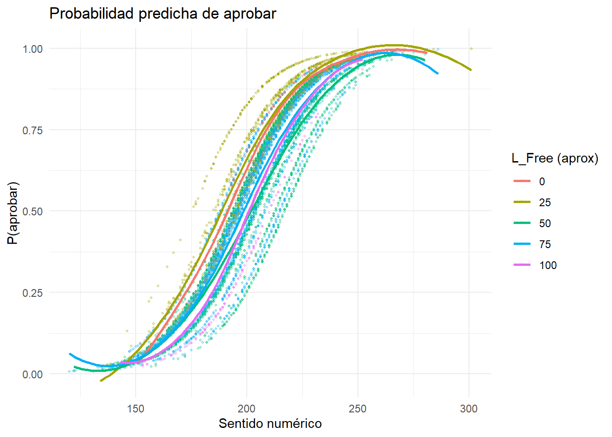
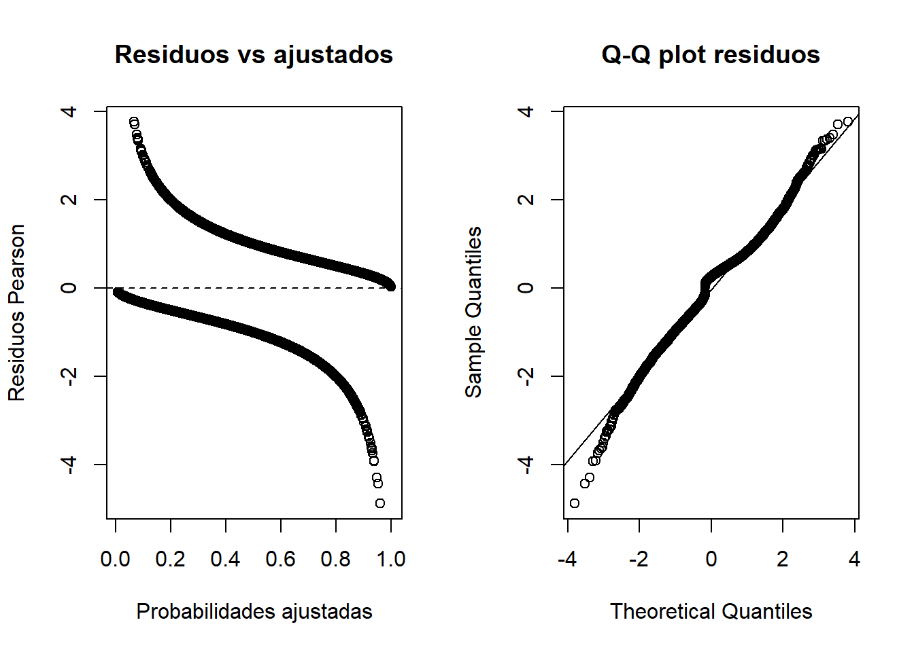
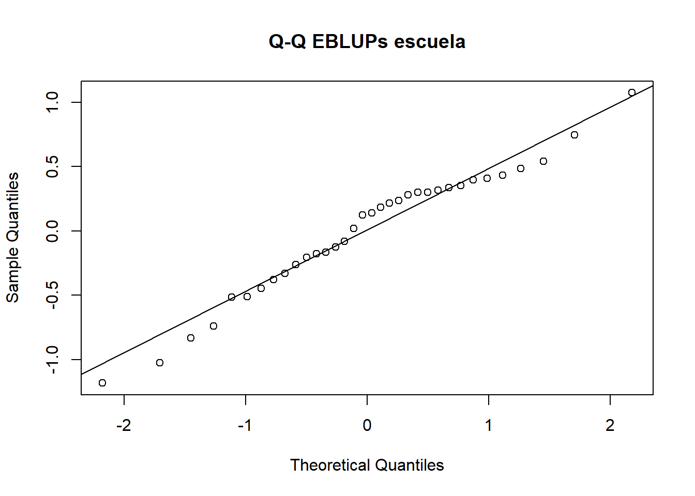

flowchart TD
A[Outcome binario\nscore2 = 0/1] --> B[Link logit]
B --> C[Probabilidad de aprobar]
C --> D[Nivel 1: estudiante\nnumsense, female]
C --> E[Nivel 2: escuela\nL_Free]
D --> F[GLMM logístico]
E --> F
Modelo lineal generalizado multinivel (Multilevel GLM)
The Mathematics Achievement Example 📐 - Finch et al., Cap. 8 (p. 133)
1 📐Problema de investigación
Se estudia la probabilidad de aprobar un examen de matemáticas (score2 = 1 aprobar, 0 reprobar) en estudiantes anidados dentro de escuelas.
Pregunta central: ¿Qué factores a nivel de estudiante y escuela se asocian con la probabilidad de aprobar el examen de matemáticas, considerando que los estudiantes están agrupados dentro de escuelas?
2 📐¿Por qué un modelo logístico multinivel?
El outcome es binario — no continuo — por lo que no aplica un modelo lineal mixto estándar. Se necesita:
| Característica | Modelo usado |
|---|---|
| Outcome binario | Regresión logística |
| Estudiantes agrupados en escuelas | Multinivel |
| Combinación | GLMM logístico con glmer() |
3 📐Estructura de los datos
Mostrar código
nrow(mathfinal)[1] 9316Mostrar código
n_distinct(mathfinal$school)[1] 40Mostrar código
mathfinal |>
count(score2, name = "n") |>
mutate(prop = round(n / sum(n), 3))# A tibble: 2 × 3
score2 n prop
<dbl> <int> <dbl>
1 0 4049 0.435
2 1 5267 0.565Mostrar código
mathfinal |>
count(school, name = "est_por_escuela") |>
summarise(
min = min(est_por_escuela),
max = max(est_por_escuela),
media = round(mean(est_por_escuela), 1))# A tibble: 1 × 3
min max media
<int> <int> <dbl>
1 40 691 233.4 📐Variables
| Variable | Nivel | Tipo | Rol |
|---|---|---|---|
score2 |
1 | Binaria | Outcome — 1=aprueba, 0=reprueba |
numsense |
1 | Continua | Covariable — sentido numérico |
female |
1 | Binaria | Covariable — sexo |
L_Free |
2 | Continua | Covariable — % almuerzo gratis (pobreza) |
school |
2 | Identificador | Agrupación |
5 📐Exploración descriptiva


6 📐Estrategia de análisis
flowchart TD
A[Model 8.1\nIntercepto aleatorio\n+ numsense] --> B[Model 8.2\nPendiente aleatoria\nde numsense]
B --> C{¿Mejora 8.2 vs 8.1?}
C -->|Sí p<0.001| D[La relación numsense-aprobación\nvaría entre escuelas]
D --> E[Model 8.3\n+ female + L_Free\nintercepto aleatorio]
E --> F[Model 8.4\nPendiente aleatoria\nde female]
F --> G{¿Mejora 8.4 vs 8.3?}
G -->|No| H[Model 8.3 — Preferido\npor parsimonia]
7 📐Model 8.1 — Intercepto aleatorio
Mostrar código
model8.1 <- glmer(
score2 ~ numsense + (1 | school),
family = binomial,
data = mathfinal,
na.action = na.omit)Warning in checkConv(attr(opt, "derivs"), opt$par, ctrl = control$checkConv, : Model is nearly unidentifiable: very large eigenvalue
- Rescale variables?Mostrar código
summary(model8.1)Generalized linear mixed model fit by maximum likelihood (Laplace
Approximation) [glmerMod]
Family: binomial ( logit )
Formula: score2 ~ numsense + (1 | school)
Data: mathfinal
AIC BIC logLik -2*log(L) df.resid
9835.9 9857.4 -4915.0 9829.9 9313
Scaled residuals:
Min 1Q Median 3Q Max
-5.2722 -0.7084 0.2870 0.6448 3.4279
Random effects:
Groups Name Variance Std.Dev.
school (Intercept) 0.2888 0.5374
Number of obs: 9316, groups: school, 40
Fixed effects:
Estimate Std. Error z value Pr(>|z|)
(Intercept) -11.659653 0.305114 -38.21 <2e-16 ***
numsense 0.059177 0.001445 40.97 <2e-16 ***
---
Signif. codes: 0 '***' 0.001 '**' 0.01 '*' 0.05 '.' 0.1 ' ' 1
Correlation of Fixed Effects:
(Intr)
numsense -0.955
optimizer (Nelder_Mead) convergence code: 0 (OK)
Model is nearly unidentifiable: very large eigenvalue
- Rescale variables?8 📐Intervalos de confianza Model 8.1
Mostrar código
confint(model8.1, method = "Wald") 2.5 % 97.5 %
.sig01 NA NA
(Intercept) -12.25766540 -11.06164083
numsense 0.05634573 0.062008159 📐Model 8.2 — Pendiente aleatoria de numsense
Mostrar código
model8.2 <- glmer(
score2 ~ numsense + (numsense | school),
family = binomial,
data = mathfinal,
na.action = na.omit,
control = glmerControl(optimizer = "bobyqa",
optCtrl = list(maxfun = 2e5)))Warning in checkConv(attr(opt, "derivs"), opt$par, ctrl = control$checkConv, : Model failed to converge with max|grad| = 0.0527803 (tol = 0.002, component 1)
See ?lme4::convergence and ?lme4::troubleshooting.Warning in checkConv(attr(opt, "derivs"), opt$par, ctrl = control$checkConv, : Model is nearly unidentifiable: very large eigenvalue
- Rescale variables?Mostrar código
summary(model8.2)Generalized linear mixed model fit by maximum likelihood (Laplace
Approximation) [glmerMod]
Family: binomial ( logit )
Formula: score2 ~ numsense + (numsense | school)
Data: mathfinal
Control: glmerControl(optimizer = "bobyqa", optCtrl = list(maxfun = 2e+05))
AIC BIC logLik -2*log(L) df.resid
9768.9 9804.6 -4879.4 9758.9 9311
Scaled residuals:
Min 1Q Median 3Q Max
-4.6058 -0.6945 0.2846 0.6351 3.6866
Random effects:
Groups Name Variance Std.Dev. Corr
school (Intercept) 19.343863 4.3982
numsense 0.000365 0.0191 -1.00
Number of obs: 9316, groups: school, 40
Fixed effects:
Estimate Std. Error z value Pr(>|z|)
(Intercept) -1.272e+01 1.366e-03 -9309.1 <2e-16 ***
numsense 6.408e-02 3.666e-04 174.8 <2e-16 ***
---
Signif. codes: 0 '***' 0.001 '**' 0.01 '*' 0.05 '.' 0.1 ' ' 1
Correlation of Fixed Effects:
(Intr)
numsense -0.015
optimizer (bobyqa) convergence code: 0 (OK)
Model failed to converge with max|grad| = 0.0527803 (tol = 0.002, component 1)
See ?lme4::convergence and ?lme4::troubleshooting.
Model is nearly unidentifiable: very large eigenvalue
- Rescale variables?Mostrar código
anova(model8.1, model8.2)Data: mathfinal
Models:
model8.1: score2 ~ numsense + (1 | school)
model8.2: score2 ~ numsense + (numsense | school)
npar AIC BIC logLik -2*log(L) Chisq Df Pr(>Chisq)
model8.1 3 9835.9 9857.4 -4915.0 9829.9
model8.2 5 9768.9 9804.6 -4879.4 9758.9 71.059 2 3.712e-16 ***
---
Signif. codes: 0 '***' 0.001 '**' 0.01 '*' 0.05 '.' 0.1 ' ' 1En Finch, Model 8.2 mejora significativamente respecto a Model 8.1, lo que sugiere que la asociación entre
numsensey aprobar varía entre escuelas.
10 📐Model 8.3 — Predictores nivel 1 y nivel 2
Mostrar código
model8.3 <- glmer(
score2 ~ numsense + female + L_Free + (1 | school),
family = binomial,
data = mathfinal.nomiss,
na.action = na.omit)Warning in checkConv(attr(opt, "derivs"), opt$par, ctrl = control$checkConv, : Model is nearly unidentifiable: very large eigenvalue
- Rescale variables?Mostrar código
summary(model8.3)Generalized linear mixed model fit by maximum likelihood (Laplace
Approximation) [glmerMod]
Family: binomial ( logit )
Formula: score2 ~ numsense + female + L_Free + (1 | school)
Data: mathfinal.nomiss
AIC BIC logLik -2*log(L) df.resid
7299.9 7334.2 -3644.9 7289.9 7061
Scaled residuals:
Min 1Q Median 3Q Max
-4.8756 -0.6792 0.2631 0.6264 3.7674
Random effects:
Groups Name Variance Std.Dev.
school (Intercept) 0.283 0.532
Number of obs: 7066, groups: school, 34
Fixed effects:
Estimate Std. Error z value Pr(>|z|)
(Intercept) -12.084486 0.418628 -28.87 <2e-16 ***
numsense 0.063637 0.001736 36.66 <2e-16 ***
female -0.026007 0.057844 -0.45 0.6530
L_Free -0.008653 0.003605 -2.40 0.0164 *
---
Signif. codes: 0 '***' 0.001 '**' 0.01 '*' 0.05 '.' 0.1 ' ' 1
Correlation of Fixed Effects:
(Intr) numsns female
numsense -0.849
female -0.069 -0.001
L_Free -0.489 0.024 -0.003
optimizer (Nelder_Mead) convergence code: 0 (OK)
Model is nearly unidentifiable: very large eigenvalue
- Rescale variables?11 📐Model 8.4 — Pendiente aleatoria de female
Mostrar código
model8.4 <- glmer(
score2 ~ numsense + female + L_Free + (female | school),
family = binomial,
data = mathfinal.nomiss,
na.action = na.omit)boundary (singular) fit: see help('isSingular')Mostrar código
summary(model8.4)Generalized linear mixed model fit by maximum likelihood (Laplace
Approximation) [glmerMod]
Family: binomial ( logit )
Formula: score2 ~ numsense + female + L_Free + (female | school)
Data: mathfinal.nomiss
AIC BIC logLik -2*log(L) df.resid
7301.1 7349.1 -3643.5 7287.1 7059
Scaled residuals:
Min 1Q Median 3Q Max
-4.6518 -0.6782 0.2622 0.6264 3.6392
Random effects:
Groups Name Variance Std.Dev. Corr
school (Intercept) 0.22881 0.4783
female 0.01049 0.1024 1.00
Number of obs: 7066, groups: school, 34
Fixed effects:
Estimate Std. Error z value Pr(>|z|)
(Intercept) -12.117018 0.412442 -29.379 <2e-16 ***
numsense 0.063693 0.001718 37.072 <2e-16 ***
female -0.021554 0.060646 -0.355 0.7223
L_Free -0.008334 0.003496 -2.384 0.0171 *
---
Signif. codes: 0 '***' 0.001 '**' 0.01 '*' 0.05 '.' 0.1 ' ' 1
Correlation of Fixed Effects:
(Intr) numsns female
numsense -0.855
female -0.043 0.003
L_Free -0.490 0.028 0.067
optimizer (Nelder_Mead) convergence code: 0 (OK)
boundary (singular) fit: see help('isSingular')Mostrar código
anova(model8.3, model8.4)Data: mathfinal.nomiss
Models:
model8.3: score2 ~ numsense + female + L_Free + (1 | school)
model8.4: score2 ~ numsense + female + L_Free + (female | school)
npar AIC BIC logLik -2*log(L) Chisq Df Pr(>Chisq)
model8.3 5 7299.9 7334.2 -3644.9 7289.9
model8.4 7 7301.1 7349.1 -3643.5 7287.1 2.7763 2 0.2495La pendiente aleatoria de
femaleno mejora significativamente el ajuste → se prefiere Model 8.3 por parsimonia.
12 📐Resumen de comparación de modelos
| Comparación | Componente evaluado | Resultado | Decisión |
|---|---|---|---|
| 8.1 vs 8.2 | Pendiente aleatoria numsense | p < 0.001 | Mejora |
| 8.3 vs 8.4 | Pendiente aleatoria female | No significativo | No retener |
| Modelo preferido | — | — | Model 8.3 |
13 📐Odds ratios e interpretación
| Efecto | Logit | OR | EE | z | p | |
|---|---|---|---|---|---|---|
| (Intercept) | (Intercept) | -12.084 | 0.000 | 0.419 | -28.867 | 0.0000 |
| numsense | numsense | 0.064 | 1.066 | 0.002 | 36.663 | 0.0000 |
| female | female | -0.026 | 0.974 | 0.058 | -0.450 | 0.6530 |
| L_Free | L_Free | -0.009 | 0.991 | 0.004 | -2.400 | 0.0164 |
- OR > 1 → aumentan los odds de aprobar
- OR < 1 → disminuyen los odds de aprobar
numsense: por cada punto adicional en sentido numérico, los odds de aprobar se multiplican por el OR estimadoL_Free: escuelas con mayor pobreza tienen menores odds basales de aprobar
14 📐Probabilidades predichas
`geom_smooth()` using formula = 'y ~ x'
15 📐Diagnósticos


16 📐Conclusiones
- El outcome binario requiere un modelo logístico multinivel
- El sentido numérico (
numsense) se asocia positivamente con los odds de aprobar - La pobreza escolar (
L_Free) se asocia negativamente - La pendiente aleatoria de
numsensemejora el ajuste en el modelo simple - La pendiente aleatoria de
femaleno mejora el ajuste respecto al model8.3 - El Model 8.3 es el modelo preferido — intercepto aleatorio por escuela con predictores de nivel 1 y 2
El modelo preferido es un modelo logístico multinivel de intercepto aleatorio, en el que la probabilidad de aprobar depende del sentido numérico del estudiante y de características escolares, mientras que las escuelas pueden diferir en su nivel basal de aprobación.
17 Anexo técnico — Intervalos bootstrap
Mostrar código
# Tarda varios minutos — ejecutar manualmente
confint(model8.3, method = "boot", boot.type = "perc")